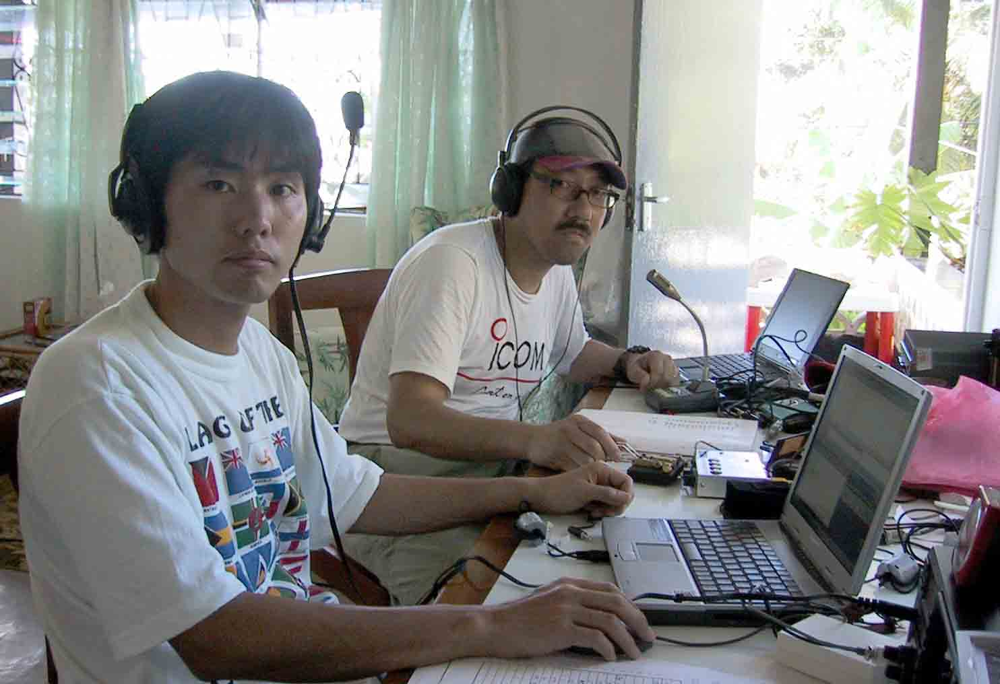
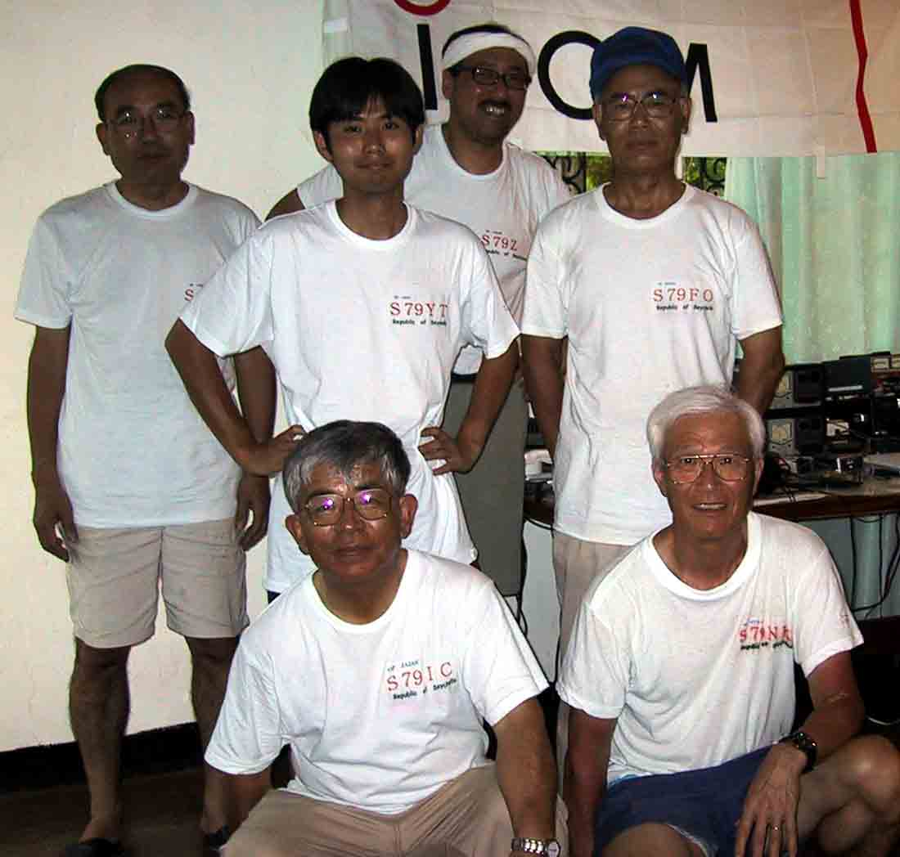
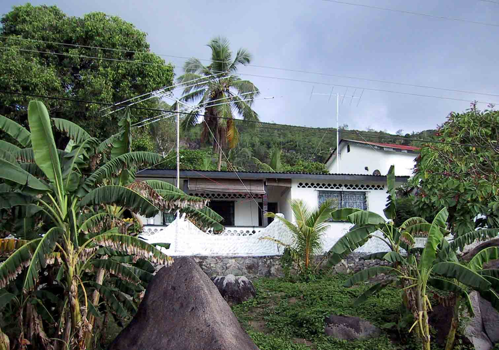

|
S79Z(Seychelles)
○ 2001 APR 12th～APR 20th
今春QRVしたSeychellesからは皆さんQSO、あるいは長時間にわたりワッチありがとうございました。
６ｍにおいてのPathは予想通り厳しいものがありましたが、１度のScatterおよび本土までのShort Pathに恵まれることができました。
今回SeychellesからのQSO結果をまとめておきましたので、何かの参考になればと思います。
次回、Seychellesやその近辺の島々からQRVするときの資料になればと思います。
また、一部機材は先発大阪からのJA3AQM,JR3DVLグループの残していただいたものを使用させていただきました。
ありがとうございました。

運用中のS79YT(JJ2NYT=手前)、S79Z(JA9LSZ)
○ 6mのQRV期間
2001年4月13日14:47z～4月17日18:23z(4/18はNo Open）
○ QSO総数およびエンティティー
246局（SSB/CWで2回QSOした局は2局でカウント）
A4, BV, CT3, EH6, EH7, EH8, ET, HZ, I, IS0, JA, JY, LZ, S5, SV, SV9
TA, TR8, VK, VQ9, VR2, VU, YB, YO, YU, ZC4, Z3, 4X, 5B, 5X, 9H, 9V
計32エンティティー
○ 設備
TRCVR IC-706MKⅡG＋HL-206V（200W Linear AMP）
Antenna 8m High 5ele F9FT Single
○ SeychellesからのPropagation
赤道直下のSeychellesからは予想していたとおりJAに対しては厳しい状況でした。
しかし、めったに運用できない地域からのQRVでもあり現地で聞いた6mの感想をレポートしておきます。
なにぶん素人無線（アマチュア無線）ですので、伝搬についてのメカニズムや専門的なことは述べることはできませんが、
何かの参考になればと思います。
①１st QSO from SEYCHELLES
S7からの6m 1st QSOは4/13 14:47zのCT3DL。50.120MHzでビーコンを出していて反応がないため、
50.110MHzをワッチしたらEH8BYRが出ており、50.120MHz QSYと伝えて呼んでいたらCT3DLがこちらを呼んできた。
次にEH8BYRとQSO、その後JA6FRIに呼ばれJAのOPENに気が付いた。
沖縄やその周辺の島々は大変強力！みんな59でQSOできる。しかもほぼ毎日。
これだけ強いのだから本土の6、4、5エリアあたりがもっとできていいはず...と思うがなぜか距離は伸びない。
また、S7からはBY-TVの49.750MHｚの信号がASIA OPENのPilotになるが49.750の信号の入感がない日でも沖縄の信号はよく聞えていた。
開いていない？と思っても意外とOPENしていることもある。
②良好だった横のPath
S7は赤道に近いところに位置するが、意外と同じような赤道に近いエンティティーと安定したQSOができている。
TR8、5X、9V、YB、BV、VR2...etc。
特にアフリカ方面では5X1GSとTR8XXのActivityの高さが目立つ。
5X1GSなんかは毎日呼んできてくれ、今日はどこが聞こえた、あそことできたなど情報交換もでき、
彼自身6mを本当に楽しんでいる感じであった。
4/15の09:15zにはFW5ZLの信号が聞こえ、翌16日09:13zにはVK8VFのビーコン、
その20分後にVK8AHとVK8MSの2局とQSOできた。
09:59zにはP29BPLのビーコンが聞こえたが、残念ながら出ている局がなくQSOには至らなかった。
南太平洋でのActivityが高ければ、さらにQSOできたエンティティーは増えただろう。
③縦のPathはEUのPile
一般的には横のPathに比較して縦のPathは良好なはずである。
先行の大阪チームのEUからのクラスターのリポートが少なく、Poor Condxかと思っていたが、
最後になってOPENしたようであった。本来ならばもっとQSOできていいはず...と思いつついつもCQを出していたら、
3日目の4/15にやっとその日がやってきた。
沖縄とのOPENが終わり、VR2とQSOした16:45zのことである。
聞きなれないCALLが聞えてきた。9H1ETだ!!!待っていたEUとのPathがついにやってきた。
さすがにEUは局数が多い。I、LZ、SV、Z3、YO、YUなどの他、アジアの４X、5BそれにJY9NXも59!!。
CW,SSBと変わりながら95局のEU、ASからの猛Pileを受けた。
SSBのPileはすごい！本当にうなりをあげて聞える。
この日の最終QSOはEH8YGで18:34z。EUは翌日の4/16にも数局QSOできたが、
この日は新たにASでZC4、TAなどともQSOできた。
続く4/17もBig OpenとまではいかなかったがEU 21局とQSOできた。
いずれも東欧が中心であるのは変わりないが、EUのPileは6mの醍醐味が味わえる!!
（いつもはJAから一生懸命呼ぶほうなので...）
日本へ帰ってきてからMDに収録された信号を聞きなおすと、当時の興奮が蘇ってくる。
EUのOPENの目安は日本でもお馴染みの48.250MHzや48.260MHzである。
EUの信号が聞えるときはそれらの信号が59++で入感していた。
また、4Xなどのビーコンも頻繁に聞えており、これらもOPENを知るいいPilotである。
④やっと聞えたScatterしかし...
JAではよく夕方Scatterの発生に遭遇することがあるが、赤道直下のS7ではどうか？
我々の宿泊していたゲストハウスは首都のあるMahe島北端にあたり、南東から西にかけてはあまりロケーションはよくない。
Scatterの発生すべき方向である南側は、あまり自身がないが毎日現地時間の昼頃はできるだけ南方向へアンテナを向けておいた。
4/15のことである。09:15z FW5ZLのCWが聞える。
こちらから一生懸命Callするが返ってこない...そのうちFWをCallするJAがかすかに聞えるようになってきた。
これはもしかして！と思いつつBand内をScanするとところどころでかすかにJAの信号が聞える。
あわてて50.120MHzのCWでCQを繰り返すが応答がない。
これは弱くて誰も気づいてくれない？と思い隣の家までPCを持って走り、IntNetに接続JG3LEBのHPに書き込む。
みんな50.120MHzを聞いてくれ～。
その甲斐あってか2局QSO...できたと思ったら...実はこれは同時にOPENしていたA4を呼んでいたものらしい。
（あとでわかった）。
道理で一杯JAが呼んできているのだが応答率が異様に悪い...もっと早く気づいて周波数を変えるべきだった。
赤道直下のScatterは１時間ももたなかった。
10:30zにはJA4MBMのCQがよく聞えているがCallすれどもまったくかすりもしない...JAの信号は結構聞えていたのにQSOできないとは実に残念！
（それなりのPowerを出している局のみ聞えたのだと思うが）
アンテナは初日だけスタックだったが、ステーが邪魔で回転の妨げになるため翌日（4/14）からシングルにしておいた。
JAにいるときでも昨秋のEUのScatterはシングルの我が家のアンテナでも結構QSOできた実績がある。
赤道直下のScatterは結構打ち上げ角が高いのかもしれない。
大阪チームと我々が滞在した2週間の間Scatterに遭遇したのは後にも先にもこの1日だけだった。
今から思うと返す返す残念。
⑤念願のJA本土のOPEN
JAとのScatterを逃しちょっと意気消沈していたが、悪いことばかりではない。
翌4/16のことである。昼間はVKとQSOできた。幸先のよいスタートである。
いつものとおり夕方から沖縄の局とQSOすると「何かいつもよりCONDXいいみたいですよ。
本土できるんじゃないですか」と声をかけられ気をよくしていると、15:13zにJO6EDDから呼ばれた。
確か彼は九州だ！やった！ついに本土上陸、続いてJF6TAC,JR6EXN...と続く。
そのうちPathはどんどん伸びていき、驚くことに5から3エリアまで聞えるようになり、
先日までここから運用していたJR3DVLそれにいつも連絡をとっていたJA3RQもQSOできた。
15:51zまで短い時間だったが深夜まで諦めずワッチしていてくれた方がいてくれたのがうれしい。
結局沖縄以外ではJA6が26、JA5が2、JA3が6、JA4が1 QSOだった。
（4/18にQRTするまでの間、6mの総QSO数は246 QSO、うちJAは85 QSO）


S7(Seychelles)から運用した6人。手前左からS79IC(JA2AIC)、S79NK(JA2AAU)
後ろ左からS79JA(JA2ALN)、S79YT(JJ2NYT)、S79Z(JA9LSZ)、S79FO(JR2FOR)
右は運用場所となったゲストハウス。6mの5eleが右手の建物の手前に見える。
○ SeychellesのInternet事情
私の契約しているプロバイダーはSeychellesに1ヶ所だけローミングのアクセスポイントがあるが、
9600bpsでしか接続できず、朝夕は非常につながりにくい。
つながってもすぐ切れたり...重いMailなど送信しようものならもう大変である。
写真１枚送ろうとして10分近くかかったこともある。
しかし、接続できるだけでもありがたいことである。情報量が断然違う。
宿泊したゲストハウスの部屋には電話がなかったので、急遽隣の家の住人にお願いして電話を貸してもらえるよう頼んだ。
Internetに接続する時は隣家までいつもPCを持って走っていった。
（これもただで使うわけにいかず1回の使用につきUS1$を支払うことにした）
隣家のオーナーはいつでも電話を使えるよう外出するときはモジュラープラグ（日本と同じ）を外へ出しておいてくれた。
余談であるがSeychellesでも携帯電話は大変普及しており宅内の電話はあまり使われていない？ようだった。
○ Seychelles情報あれこれ
＊ 物価は日本と同じくらい...いやかえって日本より高いかもしれない。
しかしこまめに回って探すと安いものもあるので自分で街をあるいて調べることは結構重要。
（これはどこの国を旅しても一緒）
＊ たまたま出会うことができたS79KMB（Keith）によると、この国にはあとHAMは2局いるとのことだった。
彼とは10年くらい前にHFでQSOしている。
Keithは現在QRTしているが近じかまた出れるようになる、と言っていた。
6mにも出てくれと言っておいたのだがRIGがない...と。しかし彼の家は島の西側にありJAとのQSOはちょっと難しいだろう。
KeithはANCHOR CAFE AND PIZZERIAという、いわゆるハンバーガーとピザの店を経営している。
美しいビーチの前にあり特大のハンバーガーを食べてきたがなかなかの味だった。
また、S79MAD（現G4MAD）とは定期的に連絡をとっていてSeychellesの無線活動にはかなり関与しているようだ。
＊ 日本人は年間200人くらい訪れているようであるが、あまり知られていない。
そこがいいのであるが...とにかく海がきれい!!自然もすばらしい。
KH2やKH0へ何回か行くくらいなら、ちょっとお金をためていかが？今回は無線仲間6人と行きましたが、
往復航空運賃＋ゲストハウス6泊＋朝食6回付きで1人18万円くらい。
あとはBeer代に相当かかりましたが...HiHi
＊ HFもQRVしましたが6mに時間を費やすあまり637 QSOに終わってしまいました。
S7は島国であり6mはOPENがないと本当に何にも聞えません。
しかし一度OPENすると静かだったBANDは騒然となり、Seychellesで聞く6mは意外にも熱かった！というのが実感です。
また、実にスリリングかつ熱いPropagation、そして楽しい仲間との9日間でした。
QSO頂いた皆さんありがとうございました。また、どこからかこのMAGIC BANDでお会いしましょう。
S79Z/JA9LSZ 八原 康広 (ja9lsz@jarl.com)
|